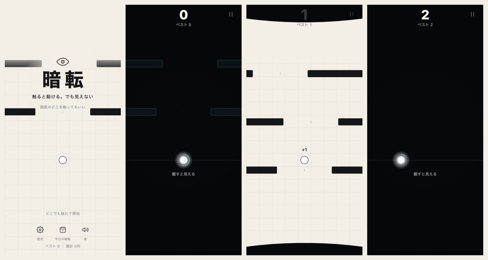
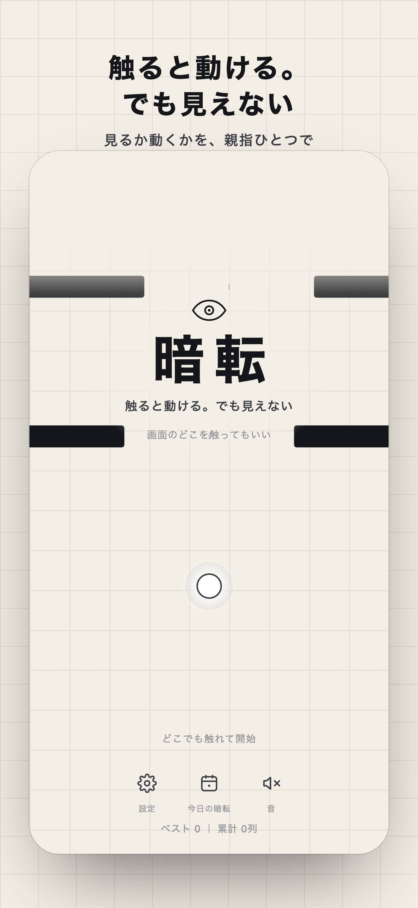
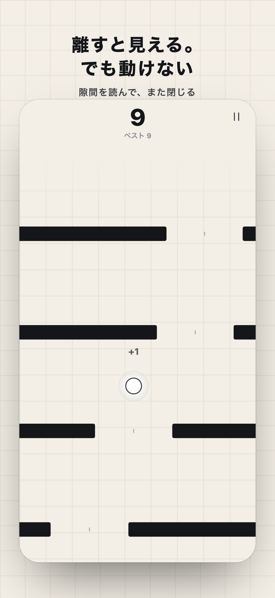
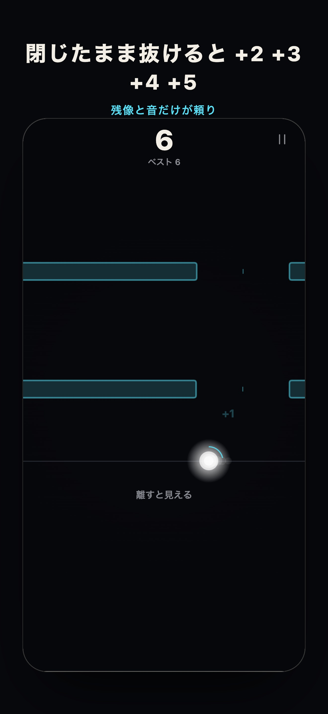
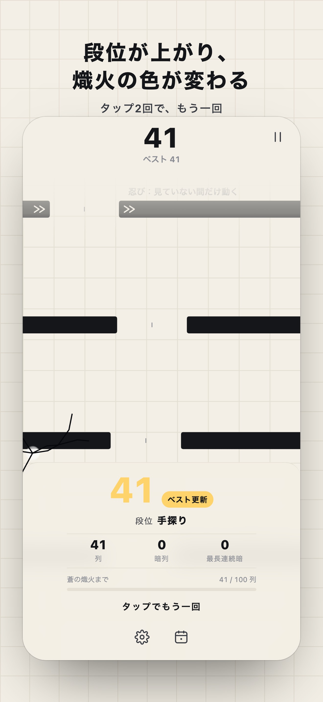
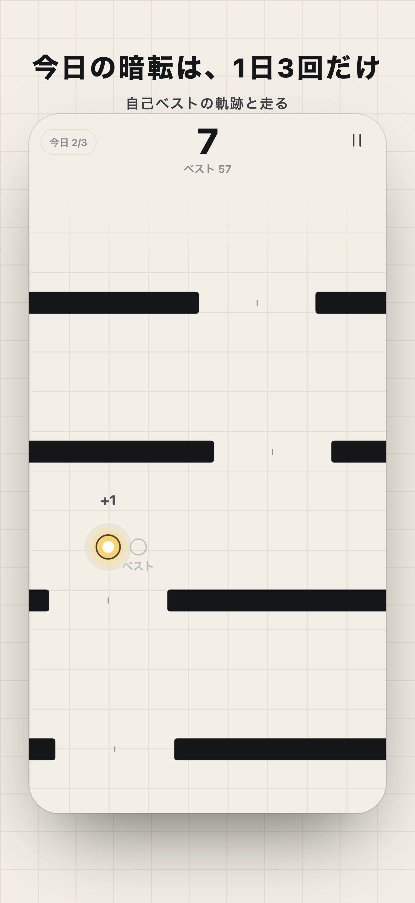

触ると動ける。でも見えない
白く光る点を、落ちてくる黒い列の隙間に通し続ける。指で触れている間だけ動ける。けれど触れた瞬間にまぶたが閉じて、画面は真っ暗。離せば見える。でも、動けない。
ブラウザで遊ぶ説明は1行だけ。触れた瞬間に「え、見えない」が起きて、ルールが体に入ります。

たった1つの決まりが、毎秒の選択になります。
忍び列は目を閉じている間だけ動く。鏡の列は閉じている間だけ左右が逆。選択列は隙間が2つ、片方は遠回り。





自己ベストで段位が上がる。段位と得点は1枚の画像にして共有できる。
遊んだ累計で、光る点（熾火）の色が変わる。日付で決まる同じ配置に1日3回だけ挑む「今日の暗転」、自己ベストの軌跡と走る「ベストに挑む」、週の皆勤バッジ。
1ファイルで完結し、通信せず、端末の中だけで動く。だから速く、軽く、どこでも同じに動く。
node tools/test.mjs・37件）